Kindle-style preview of the EPUB. Scroll through each section below.
Cover
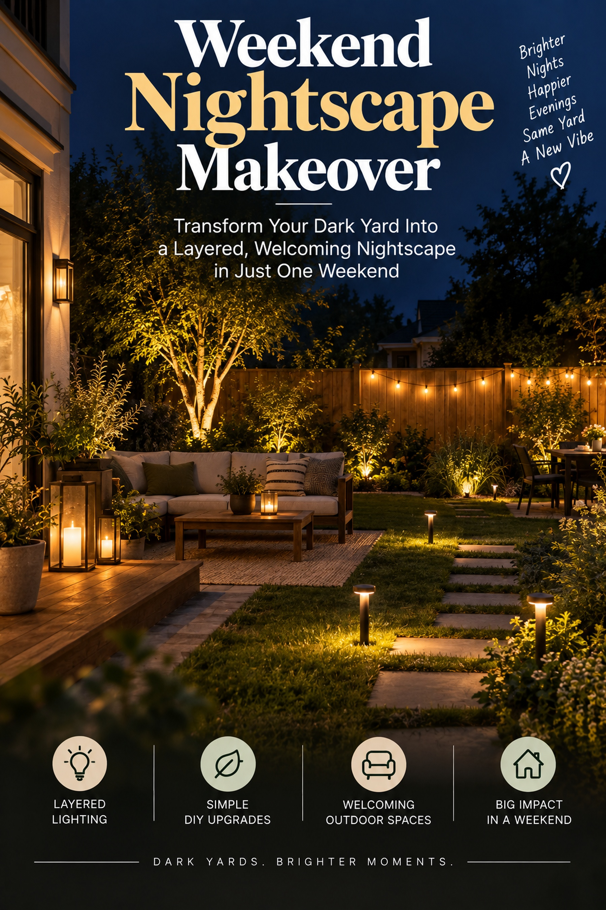
Chapter opener
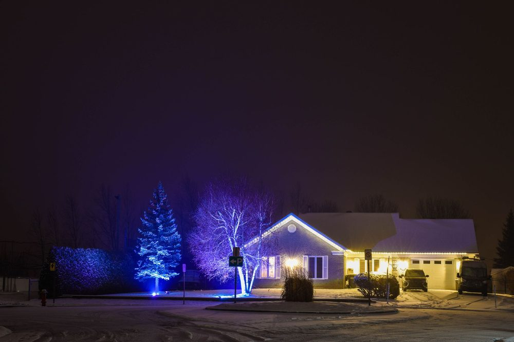
Chapter
Vision, Principles, And Your Weekend Game Plan
This book is for people who can control an outdoor edge: a private balcony, a small front strip, a private garden, or a detached-house yard. Renters in a 1BHK can usually use plug-in solar stakes, clamp lights, and temporary low-voltage kits if a protected outdoor socket already exists and the society rules allow it. They should not drill shared walls, bury cable in common land, or alter building wiring. Homeowners with a private plot can add a listed landscape transformer and buried extra-low-voltage cable after an electrician confirms the outdoor socket and residual-current protection. Examples named Pune or Bengaluru are about scale, not a claim that every 1BHK has a front yard. Match the chapter to the space you control.
Day 1 · Understanding Your Vision
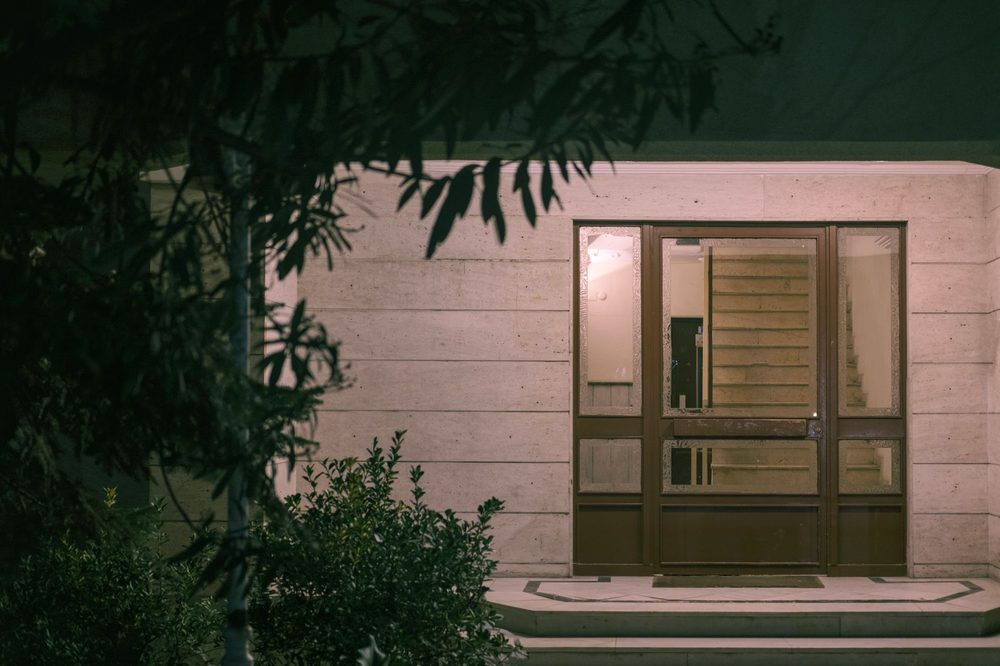
Day 1
Understanding Your Vision
In this apartment
A renter with a 4-foot balcony uses solar stakes and a plug-in string. A neighbour with a private 20-foot walk can plan a 12 V kit. Same weekend idea, different permits.
A clear vision sets the foundation for your lighting project.
Stop and hire a licensed electrician for mains-voltage work, a new outdoor socket, fixed wiring, uncertain earthing, or any connection you cannot identify. Low-voltage fixtures do not make the household supply safe to DIY.
This book covers planning and low-voltage landscape kits. Distinctions: the 12 V fixture run is not the same as the 230 V household circuit that feeds the transformer. Measure only on the extra-low-voltage side of a kit that is already unplugged or isolated as the maker describes. A voltage reading does not prove an installation is safe.
Write one sentence for the space you control: balcony, shared frontage (usually no), private garden, or detached front yard. Then pick solar-only, plug-in low voltage, or electrician-assisted transformer. Do not copy a bungalow fixture count onto a balcony.
Day 1 · Layering Your Lighting
Day 1
Layering Your Lighting
In this apartment
In Bengaluru, Priya has a rental apartment with a load-bearing wall that limits her lighting options. She learns to layer her lighting to create depth and interest despite the constraints.
Layering lighting creates dimension and enhances visual appeal.
Begin by identifying the three planes of your yard: foreground, midground, and background. The foreground includes your walkway and steps, the midground encompasses the facade and any columns, and the background consists of taller trees or features behind the primary plane.
Aim to light at least one element in each plane. For instance, use path lights to illuminate the walkway in the foreground, soft grazing on the brick facade in the midground, and uplighting on a tree in the background to create a sense of depth.
This layering technique not only enhances the visual interest but also makes the space feel larger and more inviting.
Day 2 · Creating Contrast and Comfort
Day 2
Creating Contrast and Comfort
In this apartment
In a Mumbai flat with a window on only one side, Anjali needs to ensure her lighting is comfortable and visually appealing. She focuses on contrast to enhance her space.
Contrast and comfort are key to a successful lighting design.
Use contrast to sculpt your space with light and shadow. Avoid evenly bright wall washes, as they can feel dull. Instead, highlight textures on vertical surfaces like brick or stone to create visual interest.
Aim for a balance of light and dark areas. Create pools of light separated by gentle darkness, which can enhance the perceived brightness of your yard and create a more dynamic environment.
Additionally, ensure that your lighting does not create glare. Avoid bare bulbs in direct sightlines and choose fixtures with shields to guide light away from eyes. Keeping path lights below eye level will help maintain comfort and safety.
Chapter opener
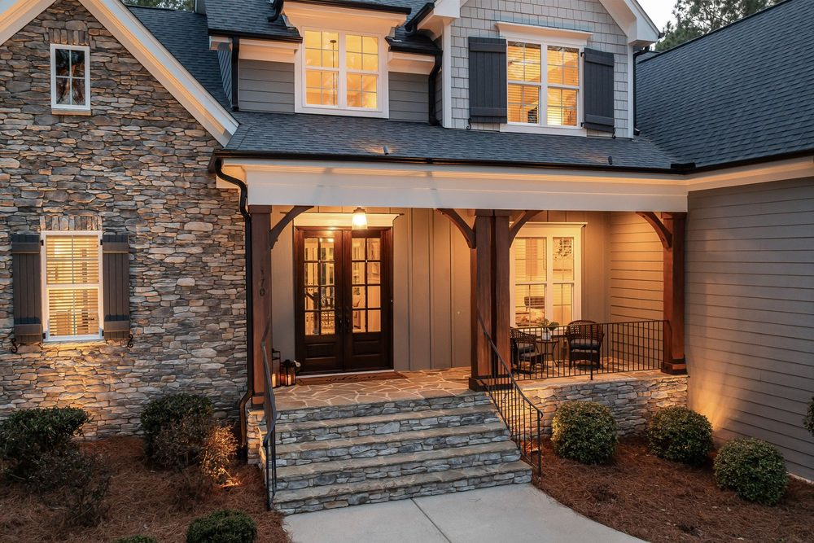
Chapter
Assessing Your Facade And Mapping Focal Points
Transform your home's exterior with a structured approach to outdoor lighting. This chapter guides you through assessing your facade, identifying focal points, and creating a prioritized lighting plan—all achievable in a single weekend.
Day 1 · Observe, Capture, Verify
Day 1
Observe, Capture, Verify
Photography is key to understanding your home's lighting needs.
Begin by using your smartphone to take three sets of photos. Start at dusk when the sky still has color and some ambient light. Then, take photos at full dark, when the porch and street lights are on, and finally, capture the same angles with no lights if possible. This comparison will help you see what elements need enhancement and how the house appears naturally.
Focus on capturing images from four angles: from the end of the driveway, centered on the approach; from the public sidewalk or curb; from the front walk looking back at the house; and from a neighbor's perspective, if possible. This will give you a comprehensive view of how your home is perceived from various vantage points.
Pay attention to how planes stack in your photos. Foreground elements include the lawn and pathway, midground includes shrubs and steps, and the background is the facade and roofline. Good lighting should emphasize the separation between these planes, allowing the eye to travel comfortably.
Day 2 · Map Planes, Paths, Hazards
Day 2
Map Planes, Paths, Hazards
In this apartment
Aditi sketches her garden layout on graph paper, marking the locations of her plants, pathways, and potential hazards. She identifies areas that need lighting to enhance safety and aesthetics.
Mapping your space helps visualize lighting needs and identify hazards.
On a piece of paper, draw a simple site plan of your property. It doesn't need to be architecturally precise; simple lines will suffice. Mark the house footprint, major trees, the walkway, driveway, porch, and property lines. Label the planes as foreground, midground, and background, and draw arrows to indicate sightlines from the three primary approach angles.
Next, identify hazards in your layout. Mark an 'H' next to low steps, raised planting beds, and any grade changes that could pose a trip hazard. These areas will be candidates for subtle hazard lighting to ensure safety. Also, mark areas that appear visually dead at night, where shadows create long dark zones that swallow detail and detract from your home's appeal.
This mapping exercise will help you visualize how light can enhance your home's exterior and ensure safety by illuminating potential hazards.
Day 3 · Prioritize Focal Points
Day 3
Prioritize Focal Points
In this apartment
After assessing her space, Aditi identifies three focal points: her front door, a decorative plant, and a textured wall. She prioritizes these elements to create a cohesive lighting plan.
Selecting focal points creates clarity and rhythm in your lighting design.
Choose up to five focal points that will create a clear visual story. Aim for three to five targets that provide architectural or textural payoff. Good candidates include the front door, a key tree with a sculptural shape, masonry columns, or a textured wall. Avoid trying to highlight every shrub; a limited set of focal points creates clarity and rhythm in your design.
Consider the impact of your lighting choices on neighbors and adhere to dark sky principles. The International Dark Sky Association recommends shielding lights and aiming them downward to reduce glare and skyglow. Note any windows across the property where spill light could be a problem, and if you have HOA rules, document them on your plan, highlighting any setbacks or fixture restrictions.
By prioritizing focal points, you can create a visually appealing and neighbor-friendly lighting design that enhances your home's exterior.
Chapter opener
Chapter
The Layered Lighting Recipe: Depth, Mood, And Comfort
Chapter Introduction Your sketch from the previous chapter gave you clarity about what matters in your front yard at night. Now you will turn that clarity into a layered look that feels orchestrated, comfortable, and welcoming. This is the recipe professionals use to create depth and drama without glare or gimmicks. By the end of this chapter, you will know the primary outdoor lighting types and e
Part 3 · The Layered Lighting Recipe: Depth, Mood, And Comfort
Part 3
The Layered Lighting Recipe: Depth, Mood, And Comfort
Layer path, wash, and accent only on the outdoor plane you control.
Lumens, beam angle, mounting height, and distance all change how bright a surface looks. The ranges below are starting points for a typical private front walk at night, not guarantees. A balcony needs fewer, lower-output fixtures. A white wall looks brighter than dark brick at the same lumen rating.
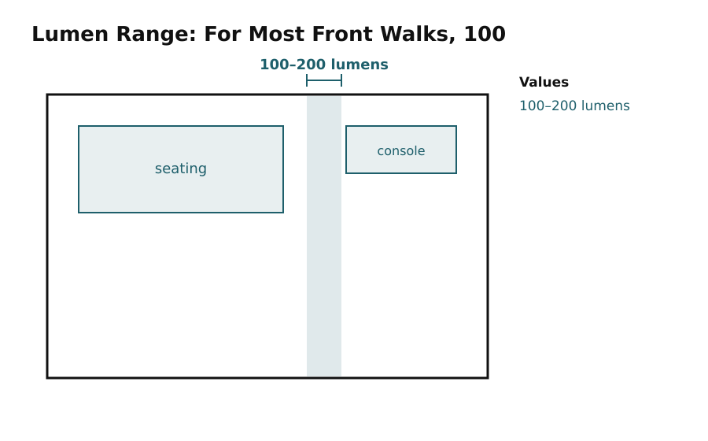
Lumen range: For most front walks, 100 to 200 lumens per fixture is comfortable.
The 1:2:3 path-to-accent-to-anchor idea is a design heuristic for where the eye goes, not a measured lighting standard. If a layer feels like a runway or a flood, lower output or count rather than chasing a ratio.
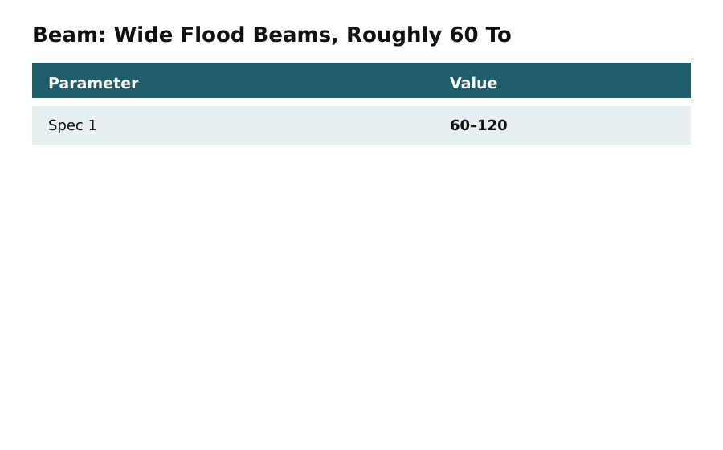
Beam: Wide flood beams, roughly 60 to 120 degrees, make for soft edges.
Most front yards look flat at night because they rely on one kind of light in one plane. A row of bright path lights or a couple of floodlights might make the area visible, but the facade reads as a wall of light. The eye cannot find hierarchy, so the scene feels harsh and cheap. Worse, mismatched color temperatures and exposed LED chips create glare and a patchwork of hot spots.
Beam: Narrow to medium, roughly 10 to 40 degrees.
If you shop first and plan later, you end up with visual noise. Too many fixture styles, random spacing, and mixed color tones fight your architecture. The result is a yard that either disappears into darkness or blasts light out to the street. The goal is not more light. The goal is the right light, in the right places, balanced so your guests and your eyes feel at ease.
Placement: Aim from a lower position at an angle of roughly 30 to 45 degrees to add shadows that give shape.
Think in layers tied to the planes you mapped. Foreground, midground, and background each get their own job. Foreground path glow invites and makes walking safer. Midground accents give your facade and plantings shape. Background anchors give depth, a gentle destination for the eye, and a sense of enclosure. You will use six types of outdoor light to build these layers. Path, wash, accent, graze, silhouette, and downlight. Each type has a typical beam angle, lumen range, and placement pattern. You will choose a color temperature palette that matches your materials and mood. Then you will balance brightness between layers using a simple ratio. Finally, you will apply design guards that limit fixture types, keep rhythm, and stop glare before it starts. The framework is simple, but it covers the details that make your yard look intentional.
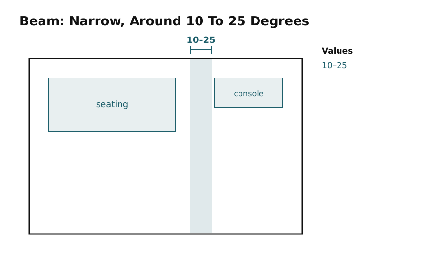
Beam: Narrow, around 10 to 25 degrees, to press light against the surface.
Path Light, Purpose And Rules Path lights create a soft, low glow that guides steps and edges. They should never try to light your whole yard. Beam and shielding: Look for fixtures that hide the light source and throw light downward and slightly out, not sideways into eyes. Avoid exposed LED dots. Lumen range: For most front walks, 100 to 200 lumens per fixture is comfortable. Dark gravel or mulch may need closer to 200. Light concrete often looks best nearer 120 to 150.
Beam: Medium to wide, roughly 30 to 60 degrees.
Mounting height: Twelve to twenty four inches above grade is typical. Higher heights can cause glare. Lower heights may lose output into nearby plants. Spacing: Five to eight feet apart creates rhythm without runway vibes. Stagger side to side when the path is wide so the glow feels continuous. Wall Wash, Purpose And Rules Wash lights create an even base on a wall or hedge. They flatten some detail by design, which is useful when you want calm, not drama.
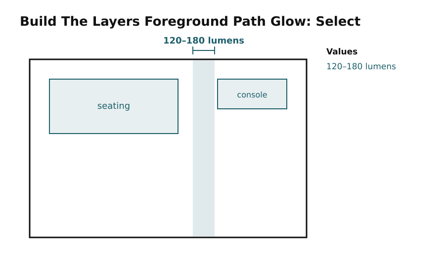
Build The Layers Foreground path glow: Select path lights at roughly 120 to 180 lumens.
Beam: Wide flood beams, roughly 60 to 120 degrees, make for soft edges. Lumen range: Two hundred to four hundred lumens per fixture, adjusted for wall color and finish. Offset and spacing: Place fixtures about one to three feet from the wall. Space them roughly equal to two times their offset. If you are two feet off the wall, start with four foot spacing and adjust for uniformity.
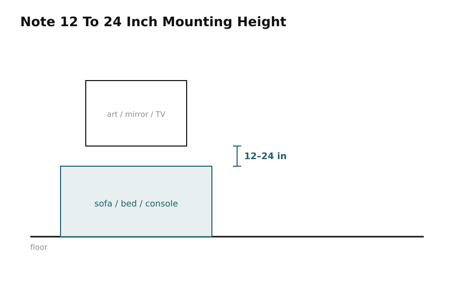
Note 12 to 24 inch mounting height.
Accent Light, Purpose And Rules Accent lights are spots with tighter beams that pick out columns, house numbers, sculptural plants, or decorative stone. They add hierarchy. Beam: Narrow to medium, roughly 10 to 40 degrees. Narrow beams sculpt tall or thin elements. Medium beams fit wider shrubs or signage. Lumen range: Two hundred to five hundred lumens for small features, four hundred to nine hundred for larger trees or tall columns.
Placement: Aim from a lower position at an angle of roughly 30 to 45 degrees to add shadows that give shape. For trees, place one to three feet from the trunk and aim up toward the canopy. Graze Light, Purpose And Rules A graze is a specialized accent, placed close to textured surfaces like brick or stone to reveal pattern and relief. It adds drama without raising overall brightness.
Beam: Narrow, around 10 to 25 degrees, to press light against the surface. Lumen range: One hundred fifty to three hundred lumens is usually enough because texture amplifies perceived brightness. Offset: Six to twelve inches from the wall. The closer the fixture, the stronger the texture effect. Silhouette Light, Purpose And Rules Silhouette lighting creates a dark shape in front of a lighter background. It is a quiet, high end effect that gives depth.
Technique: Light the surface behind the object, not the object itself. For
as a dark form in front. Lumen range: Keep background brightness low, roughly 100 to 200 lumens per fixture, so silhouettes read without glare. Placement: Place the wash or accent behind the subject and aim at the backdrop. Make sure viewers do not look directly into the fixture. Downlight, Purpose And Rules Downlights create pools of light from above.
They mimic moonlight, add comfort at entrances, and reduce shadows in seating areas. Beam: Medium to wide, roughly 30 to 60 degrees. A wider beam is softer and forgiving. Lumen range: Two hundred to seven hundred lumens depending on mounting height. Higher mounting needs more output for similar illuminance. Mounting height: Ten to twenty feet high from eaves or sturdy branches.
Use shielding and aim away from viewing angles to reduce glare. If mounting in trees, use straps rather than screws to protect the tree. Color Temperature And CRI Color temperature sets the emotional tone. Warm light, roughly 2700K to 3000K, feels welcoming and flatters most residential materials like wood, brick, and warm stone. Neutral to slightly cool light, roughly 3000K to 3500K, can work well with crisp modern materials like white stucco, metal, and smooth concrete. Cool light above 4000K can feel clinical outdoors, so use restraint.
Consistency matters as much as the number itself. Mixing 2700K and 4000K in the same view can make your facade look patchy and cheap. Choose one main color temperature and repeat it across the scene. A Color Rendering Index of 80 or higher will keep colors from looking dull. For rich materials or artful planting, aim for CRI of 90 or higher so greens and reds look vivid rather than gray.
Beam Control And Brightness Ratios Beam control beats brute force. Narrow beams carve, medium beams shape, wide floods unify. Combine them to create hierarchy. Put narrow accent beams on features you want to pop. Use medium beams for gentle highlights. Use floods for the base layer. Balance brightness so the eye moves comfortably. A simple ratio for a front yard is 1 to 2 to 3 for path glow, accent highlights, and focal anchors. If a path light creates an area with a perceived brightness level of 1, set midground accents near 2, and background anchors near 3. The actual lumen numbers can vary by fixture and surface, but keep the steps in brightness similar. Avoid a jump from 1 to 6, which feels harsh. When in doubt, dim accents or choose lower output versions rather than pushing path lights higher.
Design Guards That Keep Seams Clean Limit fixture types so the scene feels coherent. Use one style for path lights, one for spots, and one for wash lights. Maintain rhythm in spacing, especially along paths and walls. Hide light sources with shielding so viewers see the effect, not the source. Keep sightlines clear, never aim fixtures toward the street or a neighbor window. Repeat color temperature across layers and avoid mixing brands with obviously different tones. This discipline is what makes a weekend project look like a designer worked on it.
Implementation Strategy Start With Your Sketch Open the marked up sketch from your assessment. Label foreground, midground, and background as you saw them at night. Circle the features you decided to prioritize. Now you will assign a light type to each and note counts, spacing, and output. Choose Your Color Palette Pick one main color temperature for the entire front view. For most homes, that is 2700K or 3000K. If your facade is very modern and your materials are cool, choose 3000K to 3500K. Decide on CRI. Choose 80 plus as a minimum and 90 plus when budget allows.
Build The Layers Foreground path glow: Select path lights at roughly 120 to 180 lumens. Mark them at five to eight foot intervals along the walk, with staggered placement if the path is wide. Note 12 to 24 inch mounting height. Midground accents: Choose spots with medium beams at roughly 20 to 40 degrees. Mark one spot for each focal element you circled, like columns or a specimen shrub, at 200 to 500 lumens. Adjust counts so each major element gets at least one highlight.
Background anchors: Pick one or two features that will sit behind the facade. A tall tree, a textured wall, or a hedge that defines the property line. Use accent or wash fixtures at roughly 300 to 700 lumens depending on distance and size. This layer should create the 3 in your ratio. Add Texture And Depth Graze: If you have brick or stone, mark one or two graze locations near the entry. Keep outputs lower, roughly 150 to 300 lumens, and offsets near six to twelve inches.
Silhouette: Identify one background panel that can be lit softly so a plant reads as a dark form in front. Note a wash behind that plant at roughly 100 to 200 lumens. Place Downlights For Comfort If you have eaves over the porch or a branch above the lawn, mark one or two downlights at 10 to 20 feet height. Use wide beams and roughly 250 to 500 lumens to create pools of light, not spots.
Confirm The Brightness Ratio On your sketch, add a small 1 next to path glows, a 2 next to accent highlights, and a 3 next to background anchors. Scan the view from the street and driveway. Make sure there is a gentle climb from 1 to 3. If something will read brighter than 3, lower its output or reduce count. Create Your Bill Of Layers Write a short list of fixture types, quantity, general placement, and desired output. This becomes your shopping and install guide.
Path lights, 6 to 10 units, 120 to 180 lumens, spaced 6 feet, staggered. Accent spots, 4 to 6 units, 20 to 40 degree beams, 300 to 500 lumens, aimed at columns and shrubs. Wash lights, 2 to 4 units, wide beams, 250 to 400 lumens, 2 feet off wall, 4 to 6 foot spacing. Graze spots, 2 units, 10 to 25 degree beams, 150 to 300 lumens, 8 inches off textured wall.
Downlights, 1 to 2 units, 30 to 60 degree beams, 250 to 500 lumens, mounted under eaves at 12 to 16 feet. Silhouette wash, 1 unit, 150 lumens, aimed at fence panel behind ornamental grass. Real-World Application Craftsman Entry, Warm Welcome A craftsman bungalow has a brick porch, two tapered columns, and a sinuous walkway. Foreground path lights at 150 lumens, spaced six feet, give a gentle rhythm. Midground accent spots at 300 lumens with 25 degree beams pick out the columns and the house number plaque. A graze at 200 lumens sits eight inches off the brick to reveal texture near the door. One downlight at 350 lumens under the eave pools light over the seating bench. All fixtures at 2700K with CRI 90 make the wood and brick glow. The 1 to 2 to 3 ratio holds. The path reads at 1, columns at 2, and a background oak lit softly at 450 lumens reads at 3. The yard feels layered and calm.
Contemporary Facade, Crisp But Comfortable A modern ranch has smooth white stucco and a linear cactus bed. Foreground path lights are minimal, 120 lumens at seven foot intervals, with tight shielding. Midground accents at 350 lumens with 20 degree beams pick out the address numbers and a sculptural agave. A wash at 300 lumens with a wide beam creates a calm base on the stucco, with fixtures two feet off the wall and five foot spacing. A silhouette washes the wall behind a tall grass, 150 lumens, making the grass read as a graphic form. Color temperature is held at 3000K with CRI 90, which keeps white looking crisp without going cold. The scene should look even, without glare into eyes or windows.
Colonial Front, Anchor With Trees A colonial has symmetrical windows and a large maple ten feet from the facade. Path lights at 130 lumens mark the straight walk in a consistent rhythm. Accent spots at 250 lumens highlight shutters and a central pediment. The maple gets two uplights at 600 lumens with 30 degree beams, placed two feet from the trunk to push light into the canopy. A porch downlight at 300 lumens creates a welcoming pool at the door.
All fixtures at 3000K with CRI 80 plus. The maple becomes the background anchor at 3, the facade accents sit at 2, and the path glow sits at 1. The house gains depth without bright walls. Common Pitfalls Overlighting the path. If path lights feel like a runway, reduce count or output. Keep the glow below the accents in your ratio. Mixing color temperatures. Do not combine warm and cool light in one scene. Choose one and repeat it across layers.
Exposed sources and glare. Use shielding and aim carefully. You should not see the LED directly from common views. Random spacing. Keep rhythm on paths and walls. Uneven gaps look messy and draw attention for the wrong reason. Trying to wash and graze the same surface. Pick one technique based on your materials. Graze for texture, wash for calm. Aiming accents straight up. Use angles of roughly 30 to 45 degrees so shadows define shape. Straight up beams cause harsh streaking.
Ignoring background anchors. Without a 3 layer, the yard can feel shallow. Anchor with a tree or fence panel to pull the eye back. Forgetting neighbor impact. Aim away from windows and the street. Light should belong to your lot.
Build foreground, midground, and background layers on your sketch and assign the right light type to each. Use beam control to create hierarchy, narrow for pops, medium for shape, wide for unity. Hold one color temperature across the view and choose CRI that honors your materials. Keep a simple brightness ratio, roughly 1 to 2 to 3, so the eye moves comfortably.
Limit fixture types and maintain rhythm to avoid visual noise. Shield sources and aim with care to prevent glare.
Choose a color temperature and CRI for your front view and write it at the top of your sketch. Mark path light positions with spacing notes and outputs between 120 and 180 lumens. Assign accent or wash fixtures to each focal point you circled, with beam angles and outputs noted. Identify one background anchor and specify its fixture type and output as the 3 layer.
Add one graze or silhouette effect only where texture or form will be enhanced. Place one or two downlights at eaves or branches to create comfortable pools near the entry. Write your bill of layers with counts, beam angles, outputs, and placements. Review sightlines from the street and driveway to confirm no glare and a gentle 1 to 3 brightness climb.
Chapter opener
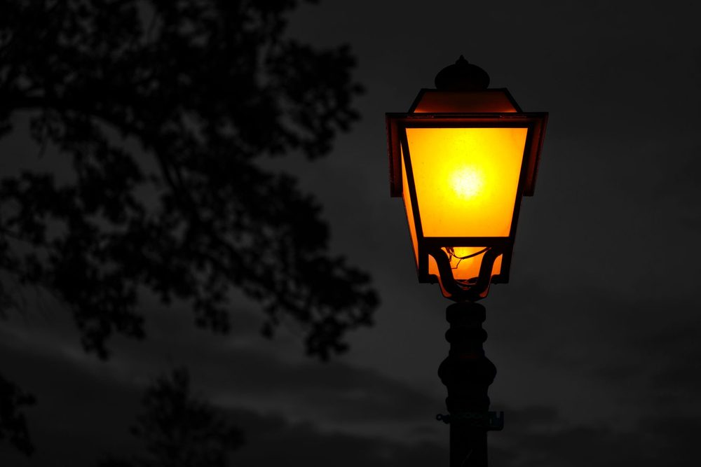
Chapter
Choosing Gear On Any Budget: Low-Voltage And Solar Paths
This chapter helps you shop with confidence for outdoor lighting, focusing on low voltage and solar paths. You'll learn how to select fixtures and controls that align with your vision for a layered night look, while avoiding common pitfalls in outdoor lighting.
Day 1 · Understanding Power Paths
Day 1
Understanding Power Paths
In this apartment
A private balcony with an existing outdoor socket can use solar plus one plug-in transformer. A shared landing usually cannot.
Choose your power path based on speed, control needs, and budget.
This book covers planning and low-voltage landscape kits. Distinctions: the 12 V fixture run is not the same as the 230 V household circuit that feeds the transformer. Measure only on the extra-low-voltage side of a kit that is already unplugged or isolated as the maker describes. A voltage reading does not prove an installation is safe.
Plug a landscape transformer only into an outdoor socket that already has residual-current protection (RCCB/RCBO in Indian practice; GFCI is the US name for a similar idea). Do not add or rewire that protection yourself.
Three power paths: (1) solar fixtures, no new cable; (2) a listed 12 V landscape transformer plugged into an already-protected outdoor socket; (3) any new 230 V point, which is electrician work. '12 volts at the lamp' is not DIY permission for the wall socket.
Solar needs sun on the panel. Hybrid is allowed: solar on edges, low voltage on the path you control.
Day 2 · Selecting Fixtures
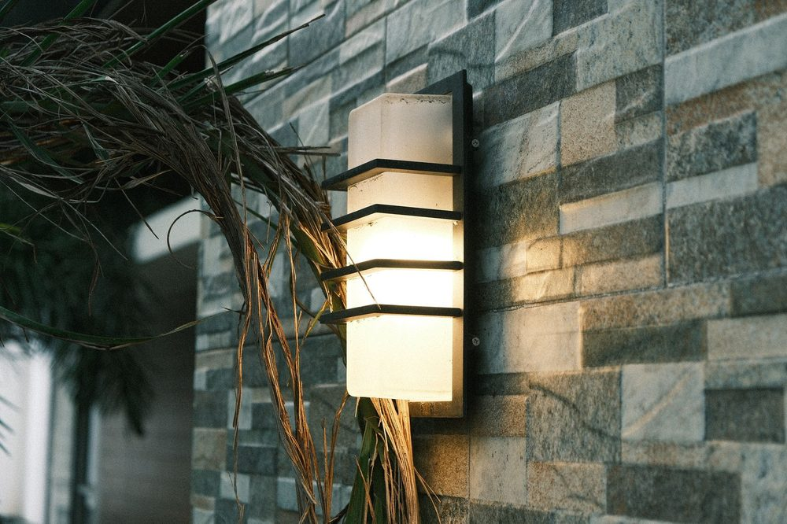
Day 2
Selecting Fixtures
In this apartment
In a Bengaluru apartment, Ravi has a load-bearing wall in his balcony garden. He needs to choose fixtures that will work well with the limited space and provide adequate lighting without overwhelming the area.
Match fixture type to layer for optimal lighting effects.
For each layer of your lighting design, select fixtures based on important characteristics such as beam control, shielding, IP rating, finish, and light source type. Aim for fewer fixture styles that offer better optics to create a cohesive look.
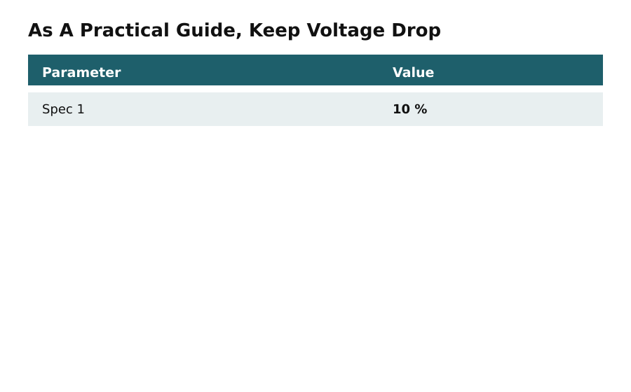
Keep voltage drop under about 10 percent to avoid visibly dimmer end fixtures.
Consider the type of light you want to achieve. For instance, use wide flood optics for facade washes and narrow spots for accenting small trees. Choose optics and shielding so that light is directed where it is needed most, reducing glare and improving the overall effect. If those fixtures sit on a 12 V kit, choose cable from the maker's chart — often 12 or 14 AWG on short runs — so voltage drop stays within that kit's published limit.
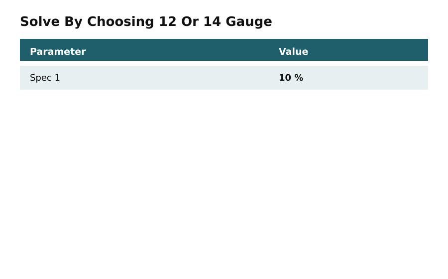
If you use a 12 V kit, pick 12 or 14 AWG only when the maker's voltage-drop chart supports that run.
Pay attention to the IP rating of your fixtures, which indicates their protection against water and solids. Aim for fixtures with an IP rating of 65 or better for outdoor use, particularly in areas exposed to rain or moisture.
Day 3 · Sizing Transformers and Cables
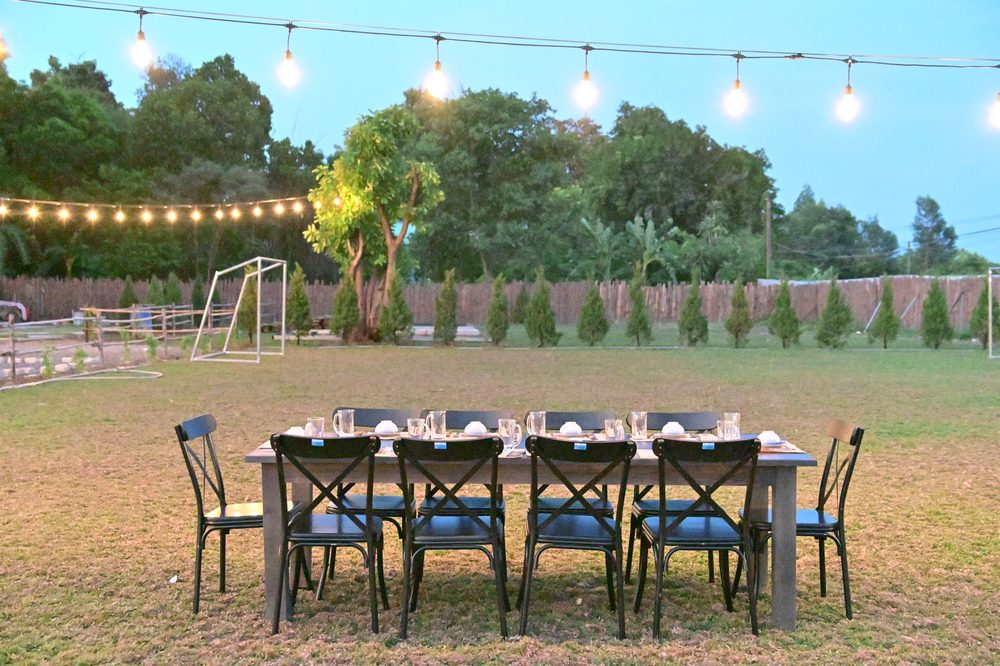
Day 3
Sizing Transformers and Cables
Right size the backbone for stable performance.
Keep four numbers separate. Fixture load is the watts printed on each lamp (use VA if the maker prints VA); that sum is the planned load. The transformer or power-supply nameplate is the VA printed on the unit — as a planning rule, keep planned load at or under 80 percent of that nameplate, which is about 25 percent spare capacity. Do not stack a second 20–30 percent bump on top. Manufacturer limits come next: the kit may require a specific supply, a minimum load, dimmer compatibility, or a lower percentage than 80 percent. Follow the manual over this book. Cable voltage drop is a separate calculation from transformer VA.
As a planning start, keep fixture load at or under 80 percent of transformer nameplate VA, then confirm the kit maker's own limit.
Worked example (illustrative starting point for one 12 V kit, not a universal spec): four 5 W path lights, two 7 W wash lights, one 5 W accent = 20 + 14 + 5 = 39 W of labelled fixture load. 39 / 0.8 ≈ 49, so a 50 VA or 60 VA nameplate is one possible starting size for that 39 W load. Do not treat 50 VA or 60 VA as correct for every 39 W lighting system. The unit you buy must be listed for that kit, match the maker's voltage type (often 12 V AC or 12 V DC — they are not interchangeable), and meet any other manufacturer requirements.
Voltage drop depends on current, cable size, length, and whether the run is extra-low voltage. Gauge and length come from that kit's voltage-drop table, not from a single global AWG rule. 12 AWG or 14 AWG landscape cable is a common starting size for short 12 V runs, not a code for every site.
Burial depth is not 'a spade deep' as a universal rule. Use the depth, protection, and route in the cable maker's instructions and in local electrical rules. If you cannot bury cable, keep runs surface-safe with listed covers, or use solar fixtures instead.
Day 4 · Choosing Connectors and Controls
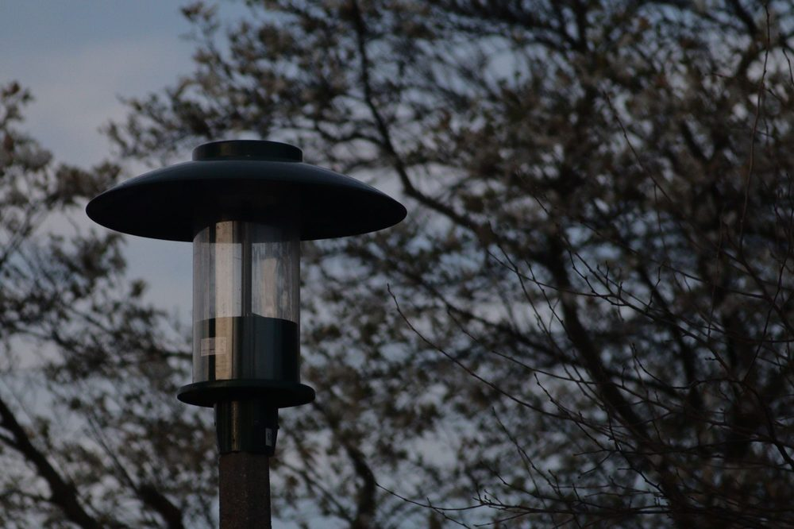
Day 4
Choosing Connectors and Controls
Ensure reliable connections and controls for hassle-free operation.
Connections are critical in outdoor lighting systems. Avoid flimsy pierce-style quick connectors that can corrode and loosen over time. Instead, opt for gel-filled wire connectors or heat shrink butt splices, which create a waterproof seal and ensure longevity.
For controls, consider simple automation options like a photocell with a timer for dusk-to-dawn operation. This setup allows for reliable performance without the need for complex smart systems. If you prefer zoning without wiring complexity, smart outdoor plugs can be used to control different zones via an app.
Manual overrides are also important. Ensure that you have a switch or plug that is easily accessible near the transformer location, allowing for quick adjustments as needed.
Chapter opener
Chapter
Layout And Circuit Planning For A Clean Install
This chapter provides a step-by-step guide to effectively plan the layout and circuit for your front yard lighting installation, ensuring a smooth and successful setup.
Day 1 · Fixture Layout Map
Day 1
Fixture Layout Map
A well-planned fixture layout prevents glare and ensures even lighting.
Begin by printing your facade sketch. Add the bill of layers you built, such as path lights along the walk, wall washes for the facade, and uplights for trees in the background. Place small dots for fixtures, labeling each with a short code, and write spacing notes. For path lights, mark six to eight feet spacing, staggered to avoid runway vibes. For wall washers, note beam widths and aiming angles to avoid hot spots on siding. For tree uplights, note distance from trunk and tilt angles for canopy glow.
Keep loads under 80 percent of transformer capacity and aim for less than 10 percent voltage drop for even brightness.
Add sightline notes. Draw thin lines from the street, curb, and your front door to confirm fixtures do not glare at common viewpoints. Shield path fixtures behind plant edges where possible. Place wall washers lower and angle them up softly, which reduces glare when looking out from inside the house.
This careful planning ensures that your front yard feels welcoming and layered at night, preventing any unwanted bright spots or dim areas.
Day 2 · Circuit And Zone Plan
Day 2
Circuit And Zone Plan
In this apartment
Ananya lives in a Bengaluru rental with a load-bearing wall that divides her living room from the front yard. She wants to create a layered lighting effect with path lights, accent lights on her facade, and uplights for her garden trees. Ananya groups her fixtures into three zones: path, accent, and background, ensuring each zone has its own control for flexibility.
Grouping fixtures into zones simplifies control and future adjustments.
Next, group your fixtures into logical zones. The most effective front yard has three: path for safety and comfort, accents for focal points on the facade, and background for depth on trees or hedges. Write a zone label next to each fixture code. This lets you set separate control levels later, for example, dimming accents during late hours while keeping paths at a comfortable level. It also makes future tweaks easy, allowing you to add one tree light later without touching the path zone.
Diagram showing loads under 80 percent of transformer capacity.
Assign loads for each zone by adding up the watts for fixtures in each group. If you chose replaceable LED lamps, use the lamp wattage. If you chose integrated LED fixtures, use the maker's spec. Aim for no more than 80 percent of your transformer capacity on any single output. This leaves headroom for dimming and for a future fixture. If your transformer has multiple taps or outputs, spread zones across them to balance load.
Choose wiring topology for each zone. You have two primary options: daisy chain or hub and spoke. For short, simple runs, daisy chain can work well, but for longer paths or zones with mixed fixture wattages, hub and spoke keeps brightness even and makes diagnostics easier.
Day 3 · Cable Route And Transformer Plan
Day 3
Cable Route And Transformer Plan
Proper cable routing prevents visible hardware and protects your installation.
Burial depth is not 'a spade deep' as a universal rule. Use the depth, protection, and route in the cable maker's instructions and in local electrical rules. If you cannot bury cable, keep runs surface-safe with listed covers, or use solar fixtures instead.
Plug a landscape transformer only into an outdoor socket that already has residual-current protection (RCCB/RCBO in Indian practice; GFCI is the US name for a similar idea). Do not add or rewire that protection yourself.
On a private plot, route extra-low-voltage cable along bed edges you control. On a rental balcony, do not cut turf in common areas; use solar or surface raceways the society allows.
Place the transformer only where the maker allows: dry, serviceable, near the protected socket, not in a sprinkler arc. Camouflage is optional; access is not.
Day 4 · Materials Staging Map and Pre Install Checklist
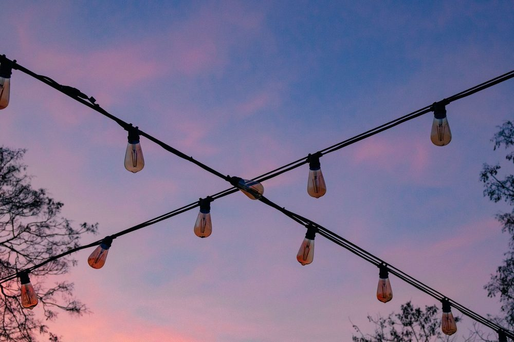
Day 4
Materials Staging Map and Pre Install Checklist
A well-organized staging area and checklist streamline the installation process.
Decide where you will stack cable coils, fixture boxes, connectors, tools, and the transformer on install day. Place everything near the zone where it will be used to reduce walking and help a helper find things without asking. Draw a simple plan, such as a garage workbench for clean assembly, staging bins at the front walk, and near the planting bed, along with a tote for connectors and dielectric grease.
Write a short checklist you can print. Include transformer location confirmed, protected outdoor socket (RCCB/RCBO) tested, fixtures counted, lamps tested, cable gauge verified, connectors sorted, utility locate done, dig lines marked, flags and chalk on hand, first aid kit and eye protection ready, and HOA notes reviewed. This list is the difference between a smooth weekend and a run to the store at dusk.
With your Three Map Method complete, you have turned a design into a plan you can follow without hesitation. You know where every fixture goes, how each zone connects, where cables run, and where the transformer lives. You have staging and a checklist ready.
Chapter opener
Chapter
Your Hour-By-Hour Weekend Schedule And Prep
One calendar: Friday night prepare and confirm the socket. Saturday daylight place and connect extra-low-voltage parts. Saturday dusk aim. Sunday inspect. Weather, drying, and a late electrician visit can push finish past the weekend — stop rather than rush mains work. The project is not complete until the dusk check and a residual-current device that stays on without repeated resets.
Friday Evening, Two To Three Hours · Friday Night Prep
Friday Evening, Two To Three Hours
Friday Night Prep
Preparation on Friday night saves crucial hours on Saturday.
Confirm the space you control, society rules, and that any outdoor socket is already protected. Count fixtures. Charge solar panels. Do not open the consumer unit.
Do this
Clear a staging area in the garage or on a clean patio.
Set up a table as your clean bench.
Lay out tools and materials, grouped by zone.
Pre-assemble fixtures, installing stakes and setting angles.
Pre-cut and label cable, adding ten percent to each run.
Build a quick reference map and tape it to the garage wall.
Saturday Morning, Eight To Ten · Saturday Morning Tasks
Saturday Morning, Eight To Ten
Saturday Morning Tasks
Batching tasks by zone streamlines the installation process.
Daylight: dry layout of fixtures, cable routes on the surface, joints with kit connectors. Do not bury until the dusk test passes.
Do this
Walk the yard with your plan to confirm dig lines and clearances.
Trench for Zone A, keeping trenches shallow and avoiding roots.
Place Zone A fixtures, staking lightly for adjustments.
Run Zone A cable and make temporary connections.
Test Zone A with a multimeter and a visual check.
Saturday Afternoon, One To Five · Saturday Afternoon Progress
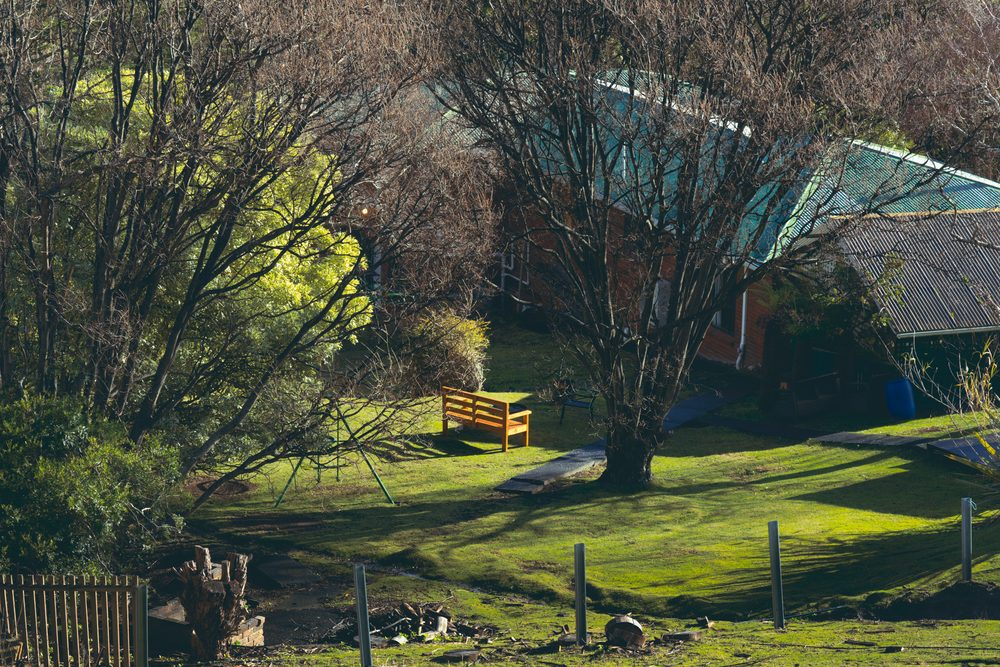
Saturday Afternoon, One To Five
Saturday Afternoon Progress
Working one zone at a time prevents complications and errors.
Finish extra-low-voltage joints. If you are behind, skip optional accents, not the path you walk at night.
Do this
Trench and place fixtures for Zone B and Zone C, working one zone at a time.
Run cable, make connections, and test each zone as you finish.
Backfill trenches for completed zones, leaving segments open for adjustments.
Saturday Night, Full Dark Window, Eight To Nine Thirty · Final Touches and Aiming
Saturday Night, Full Dark Window, Eight To Nine Thirty
Final Touches and Aiming
Aiming and tuning should only be done in full darkness for the best results.
After dark: aim, kill glare into windows, walk the path. Safety check: no exposed conductors, transformer dry, residual-current device stable. If it trips, stop.
Do this
Aim and tune fixtures only in full darkness for best results.
Adjust angles to avoid glare into windows or off sidewalks.
Blend path lights for comfort with overlapping pools of light.
Chapter opener
Chapter
Step-By-Step Installation: Low-Voltage And Solar
This chapter is your practical field guide for installing both low voltage and solar systems. You will mount the transformer at a height that keeps it dry and serviceable, lay cable with minimal disturbance, make solid waterproof connections, and verify everything with simple tools. The process is systematic when you stay on the extra-low-voltage side and stop at mains work.
Day 1 · Planning Your Installation
Day 1
Planning Your Installation
A well-planned installation ensures balanced lighting and avoids common pitfalls.
Begin by identifying the key areas you want to illuminate, such as pathways, plants, or architectural features. Mark these points clearly on your layout plan.
Ensure that the transformer is mounted at eye level for easy access and visibility. This height keeps connections clean and dry, preventing potential water damage.
Document your layout with notes or sketches, including the estimated load for each fixture to simplify future maintenance.
Day 2 · Installing the Transformer
Day 2
Installing the Transformer
Proper transformer installation is crucial for system reliability and safety.
Stop and hire a licensed electrician for mains-voltage work, a new outdoor socket, fixed wiring, uncertain earthing, or any connection you cannot identify. Low-voltage fixtures do not make the household supply safe to DIY.
If the outdoor socket already exists and is protected, you may plug in a listed landscape transformer after reading its manual. Turn the socket off at the switch or unplug before you land low-voltage leads. Do not open a distribution board.
Mount on a solid surface the maker allows. Keep a drip loop on the mains flex as the manual shows. Leave the transformer off until every 12 V joint is made.
Day 3 · Laying Cables and Positioning Fixtures
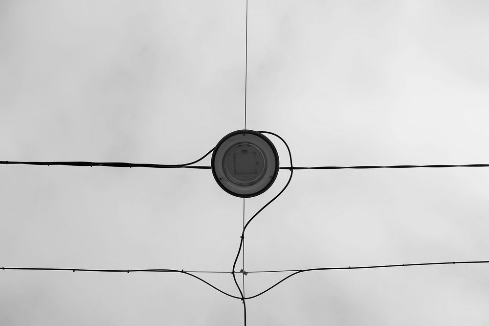
Day 3
Laying Cables and Positioning Fixtures
Correct cable routing and fixture placement are essential for effective lighting.
Burial depth is not 'a spade deep' as a universal rule. Use the depth, protection, and route in the cable maker's instructions and in local electrical rules. If you cannot bury cable, keep runs surface-safe with listed covers, or use solar fixtures instead.
Lay the 12 V cable loosely first. Aim fixtures away from windows. Use the waterproof connectors that came with the kit. Do not splice with indoor tape.
Day 4 · Testing and Finalizing Installation
Day 4
Testing and Finalizing Installation
Testing ensures that the system operates correctly and provides balanced lighting.
Test only on the extra-low-voltage terminals with a meter set for AC or DC as the kit specifies, after the transformer is plugged into a known-good protected socket. If you are not trained to use a meter, skip numerical tests and do a visual dusk check, or hire an electrician.
Far-fixture voltage that is much lower than near-fixture voltage is a drop clue, not a safety certificate. Stop if the residual-current device trips, if a cable is cut, or if water is in a joint.
Chapter opener
Chapter
Aiming, Tuning, And Nighttime Finishing Touches
This chapter is your guide to making the most of those hours after sunset. You will learn how to aim from the viewer's perspective, how to balance layers so path, accent, and background elements play well together, and how to use simple accessories to cut glare and control spill.
Day 1 · Aiming From The Viewer's Perspective
Day 1
Aiming From The Viewer's Perspective
Aim lights from the viewer's perspective to enhance texture and avoid glare.
Stand on the sidewalk, then at your curb, then at the main path to your door. The viewer's eye should flow from a subtle foreground path to focal accents, then to a soft background. Aim uplights on walls and trees so they reveal texture rather than blasting bright spots.
For walls, tilt fixtures so the beam grazes at a shallow angle. Grazing reveals texture because light skims across bumps and ridges, creating shadows that your eye reads as depth. If the beam hits the wall straight on, you get a flat wash with potential glare. Start with a gentle tilt upward and rotate left or right until highlights are even across sections of brick or stone.
For trees, avoid lighting only the trunk. Aim so the beam reaches into the canopy, skimming the underside of leaves and crossing branches. This adds height and subtle movement when leaves sway. If your tree is dense, use a narrower beam to punch into the canopy. For lighter canopies, a wider beam creates an even glow.
Day 2 · Balancing Beam Overlaps And Light Ratios
Day 2
Balancing Beam Overlaps And Light Ratios
In this apartment
Anita lives in a Bengaluru rental with a load-bearing wall that limits her lighting options. She uses the Beam Ratio Ladder to balance her path lights and accent lights, ensuring her garden feels inviting without overwhelming the space.
Balance brightness between path, accent, and background layers for a cohesive look.
Think of your yard as three layers: path, accent, and background. Your path lights should create a continuous, low glare ribbon that leads guests comfortably. Accents, such as a feature tree and a section of facade, should read brighter than the path but not dominate. Background elements, like distant shrubs, should be gentle to suggest depth.
Use the Beam Ratio Ladder to get there. Start with your path lights at their default setting, then set accents to feel noticeably brighter without creating glare. Finally, soften background lights to a comfortable glow. The goal is not precise numbers; it is the perception of balance. If the path feels lost, either raise path light brightness or reduce accent intensity.
If accents feel loud, dial them down or narrow the beam to reduce spill. This layering creates a welcoming atmosphere that feels balanced and intentional.
Day 3 · Fine Tuning Color Temperature Blending
Day 3
Fine Tuning Color Temperature Blending
In this apartment
Meera's Mumbai flat has a window on only one side, making her porch light and path lights clash in color temperature. She adjusts the path lights to a warmer tone to harmonize the overall look of her entrance.
Blend color temperatures to create a cohesive and inviting atmosphere.
If your porch fixture is a warm incandescent around 2700 Kelvin and your new LEDs are cooler around 3000 Kelvin, the difference can show. Aim for a blend that feels intentional. Use warmer lenses or dimming on cooler lights near the porch. Keep cooler accents for trees or distant features so they read as receding. Warmth pulls forward, cool recedes. Use that to shape depth.
If you have mixed sources across the yard, group warmer tones near human touch points: door, seating, numbers, and slightly cooler tones for background. Make sure path lights are warm enough to feel inviting. If the mix still feels uneven, aim cooler lights further away from direct view or add a louver or shroud to reduce direct brightness.
This careful blending ensures that your outdoor space feels welcoming and well thought out, enhancing the overall aesthetic of your home.
Day 4 · Glare Control Hardware
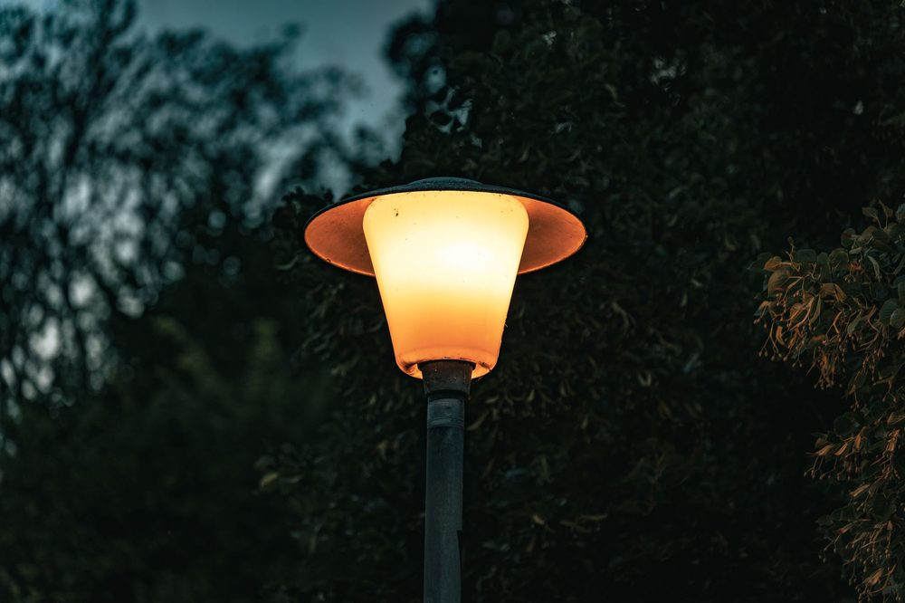
Day 4
Glare Control Hardware
In this apartment
Suresh lives in a compact apartment in Chennai and notices glare from his outdoor lights affecting his neighbors. He installs shrouds and louvers to control the light spill and enhance comfort for everyone.
Use glare control hardware to enhance comfort and reduce unwanted light spill.
Glare is the enemy of comfort. Shrouds block direct view of the lamp and tighten beam edges. Louvers act like tiny blinds, redirecting stray rays and softening spill. Hex baffles create honeycomb cells that absorb off-angle light and greatly reduce glare from certain views. A small piece of hardware can transform a scene more than swapping the entire fixture.
Add a shroud to uplights that are visible from the sidewalk. Install a louver in a spotlight facing a window, which keeps light off glass and avoids reflections. Use a hex baffle for any fixture seen from a neighbor or passing car. Remember, you are designing for how people move and look.
By implementing these small adjustments, you can greatly improve the comfort of your outdoor space, making it more enjoyable for both you and your neighbors.
Chapter opener
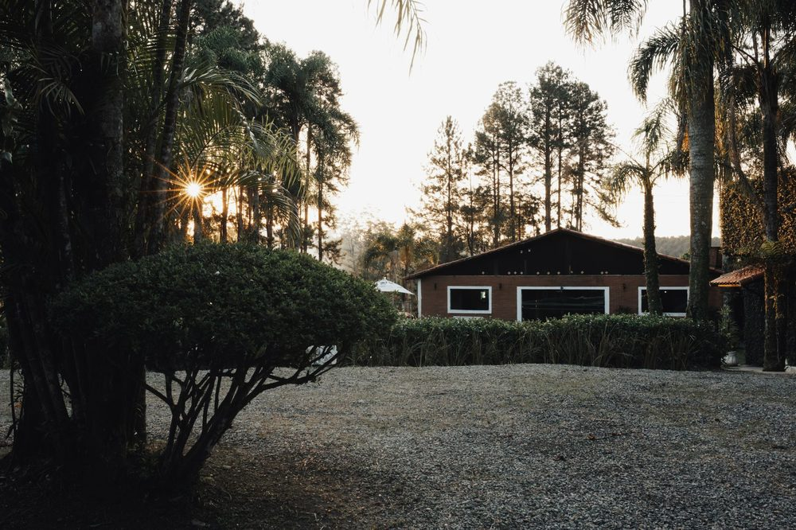
Chapter
Maintenance, Troubleshooting, And Seasonal Refresh
Your front yard is no longer dark and flat. In one focused weekend, you carved layers of light, revealed texture, and built a welcoming scene. Now comes the part that separates a one-time glow from a nightscape that feels intentionally lit every evening. Maintenance is not a chore list; it is how you keep the comfort, hierarchy, and mood you tuned during your dusk walk in the previous chapter.
Day 1 · The Problem Landscape
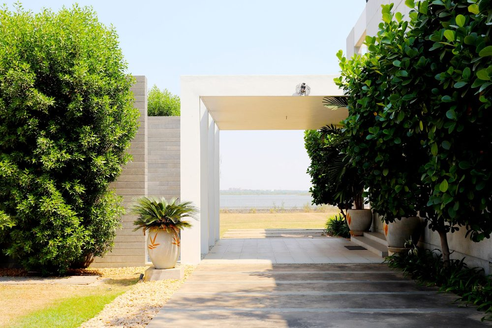
Day 1
The Problem Landscape
Regular maintenance prevents minor issues from becoming major problems.
Landscape lighting lives outdoors, which means it faces challenges like dust, pollen, and storms. Over time, lenses can fog, path lights may tilt, and connectors can corrode. If you don't have a simple plan for care, you might ignore these issues until they pile up or overreact by rewiring unnecessarily.
Electrical balance is another common challenge. Low voltage systems are forgiving, but long cable runs and mixed fixture loads can lead to voltage drops, making far fixtures appear dim or flicker. Without a quick way to measure, you may be guessing, which can lead to random changes that don't address the root cause.
Seasons change, affecting how your lighting performs. In summer, leaf canopies can obscure beams that felt perfect in spring. If you don’t refresh aims and timing, your scene may lose its comfortable rhythm.
Day 2 · The CARE Loop
Day 2
The CARE Loop
In this apartment
In her Bengaluru rental, Meera developed a simple routine to maintain her outdoor lighting after realizing that her fixtures were not performing as expected.
The CARE Loop is essential for ongoing maintenance and performance.
The CARE Loop consists of four steps: Clean, Aim, Repair, and Evolve. Start by cleaning lenses and shrouds to remove dust and debris. that your fixtures emit light evenly and effectively.
Next, aim your fixtures again as plants grow or hardscape changes. This is crucial because the aim you set initially may shift over time due to natural growth or environmental changes. Regularly check from known viewpoints, such as the street or your living room, and adjust as necessary to maintain the desired lighting effect.
Repair any connections, stakes, and cables when issues appear. This proactive approach helps prevent larger problems down the line. Finally, evolve your schedules and dimming settings as your front yard matures, ensuring that your lighting remains effective and aesthetically pleasing.
Day 3 · Optical and extra-low-voltage checks
Day 3
Optical and extra-low-voltage checks
In this apartment
In her Mumbai flat, Priya faced issues with her outdoor lighting after a storm. She decided to conduct a thorough check using the CARE Loop framework.
Regular checks ensure your lighting system operates efficiently and safely.
Start with the optical side by cleaning and re-aiming your fixtures. Wipe lenses and shrouds with a soft cloth and a mild soap solution, then rinse and dry. Remove any insect nests inside the shrouds and clear mulch or soil from around fixtures to maintain optimal performance.
Next, move to the electrical side. Begin at the residual-current device or power source, checking for any tripped circuits. Use a simple plug-in tester or lamp to confirm the outlet is functioning. If the residual-current device trips again, isolate the transformer to identify the issue. Inspect the transformer plug and cord for any damage, especially after storms or heavy yard work.
Voltage measurements should be taken only by someone qualified to perform them safely. Compare readings only with the range and meter setting the manufacturer specifies for that kit — not a single expected number copied from this book. Record qualified readings on the Run Card.
Day 4 · Implementation Strategy: Your Ongoing Care Plan
Day 4
Implementation Strategy: Your Ongoing Care Plan
A structured maintenance plan simplifies upkeep and enhances performance.
Build a simple cadence that you will actually keep. This has three parts: a monthly quick check, a quarterly tune and test, and safety audits after storms or yard work. For the monthly quick check, walk your front path at night for five minutes to inspect your lighting. Wipe any visibly dirty lenses, straighten stakes, and trim any plants that intrude into beams.
During your quarterly tune and test, clean all lenses thoroughly and re-aim focal fixtures lightly. If someone qualified to measure voltage safely is available, compare transformer output and end-of-run readings with the manufacturer range, not a number from this book, and record them on the Run Card. Open and inspect two connectors per run, rotating which ones you check so that each gets an annual inspection.
After storms or yard work, conduct a safety audit to confirm the residual-current device is on and inspect for toppled fixtures or exposed cables. After storms, unplug and look for cut cable or water in joints before you restore power.
Chapter opener
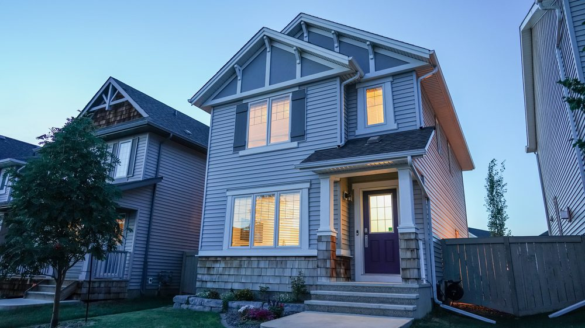
Chapter
Hour-By-Hour Weekend Schedule Checklist
Same blocks as the schedule chapter. Use this as a tick list, not a second plan. Daylight tasks first. Darkness tasks after sunset. Postpone burial if rain or if the society has not approved the route.
Friday Evening · What this sheet is for
Friday Evening
What this sheet is for
Transform intent into action with precise time blocks and task batching.
The purpose of this checklist is to turn your lighting intentions into actionable steps. By breaking down the tasks into time blocks, you can efficiently manage your weekend and achieve a well-lit outdoor space.
Batching tasks reduces the likelihood of rework. For instance, pre-assembling fixtures and staging tools ensures that you can focus on installation without interruptions.
Using daylight for dirty work and darkness for aiming and tuning allows you to maximize efficiency. This method ensures that you can complete the labor-intensive tasks when visibility is best.
Saturday Morning · How to Use
Saturday Morning
How to Use
In this apartment
In her Bengaluru rental, Priya is ready to start her lighting project. She has printed the checklist and is prepared to follow the steps methodically to ensure nothing is overlooked.
Follow each block and stop at checkpoints when noted.
To effectively use the checklist, begin by printing it out and writing in your specific zones and fixture labels. This personal touch helps in organizing your project.
Check local sunset times to adjust your night blocks by thirty minutes. that you have ample time to complete tasks before it gets dark.
Stage your tools and materials before any trenching or placement. This preparation allows for a smoother workflow and reduces the chances of forgetting essential items.
Saturday Afternoon · Weekend tick list
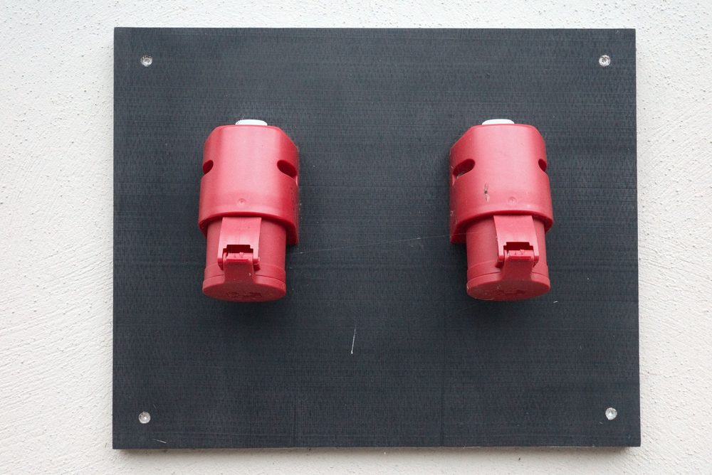
Saturday Afternoon
Weekend tick list
Log volt readings and notes in the worksheet fields.
Friday: rules, socket, kit count. Saturday light: layout and 12 V joints. Saturday dark: aim. Sunday: inspect and only then consider burial on a private plot.
Sunday Morning · Tips for Success
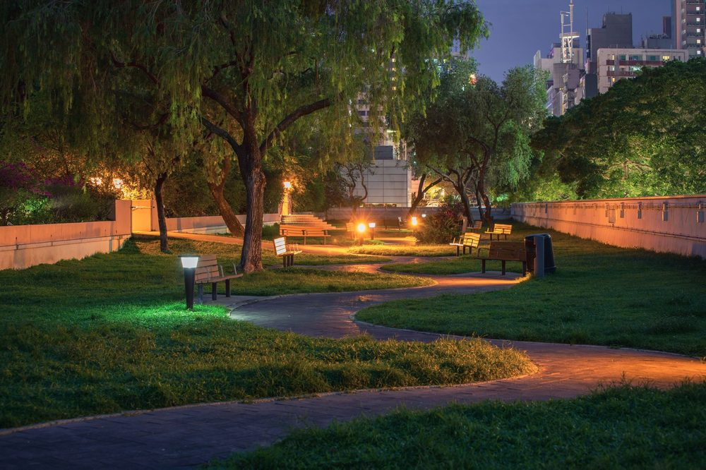
Sunday Morning
Tips for Success
Aim at night and bury by day.
Pre-assemble your fixtures and label them with zone and aim intent. This preparation helps streamline the installation process and ensures clarity during the setup.
Keep cable coils tidy for easy adjustments. This practice not only looks better but also makes it easier to troubleshoot any issues that may arise later.
Test early and often with the rapid routine. Regular checks during the installation process can help catch problems before they escalate.
Chapter opener
Chapter
Budget-Tier Shopping Lists And Load Planning
This chapter provides a comprehensive worksheet to transform your front yard lighting design into a practical shopping plan across three budget tiers. It is designed to help you select fixture counts by layer, estimate light output, plan loads and wiring, and set controls that align with your goals.
Day 1 · Understanding Your Lighting Layers
Day 1
Understanding Your Lighting Layers
Identify and categorize your lighting needs by layer for effective planning.
Begin by walking your front yard at dusk to assess the areas that require lighting. Mark the four layers: path, wash, accent, and background. This will help you prioritize which areas need the most illumination and how to allocate your budget effectively.
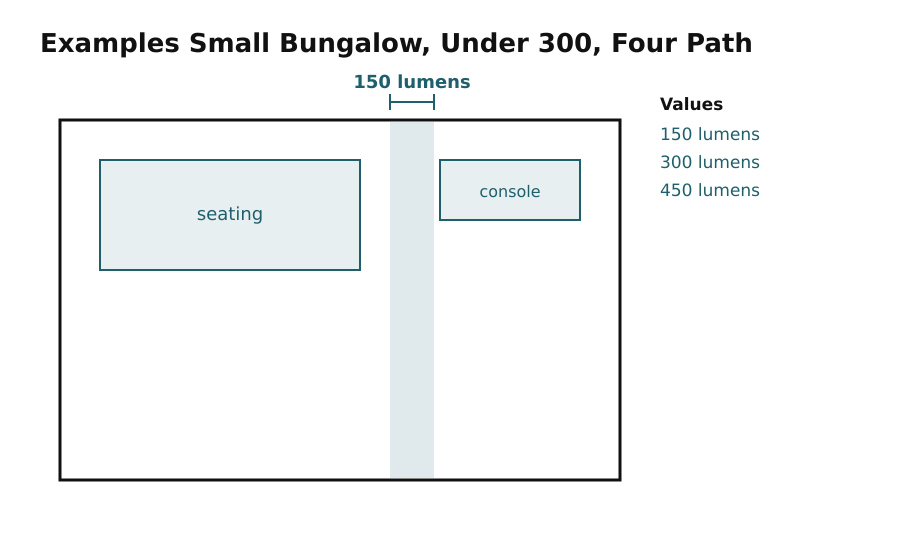
Illustrative starter kit under INR 30,000: four path lights at about 150 lumens, two wash at about 300 lumens, two accents at about 450 lumens. Lumens are starting points.
For the path layer, start with fixtures rated about 100 to 200 lumens and a wide beam. Treat that range as a starting point, not a guaranteed brightness. Position them to illuminate walking surfaces without creating glare, so the entryway is well-lit and comfortable for guests. For the wash layer, start with about 200 to 400 lumens and a medium to wide beam on walls or fences you control.
Accent lighting should be more focused, requiring fixtures that provide 300 to 600 lumens with a narrow to medium beam angle. This is perfect for highlighting features like trees or sculptures. Finally, the background layer needs less light, with fixtures providing 50 to 150 lumens and a wide beam angle.
Day 2 · Budget Tier Selection
Day 2
Budget Tier Selection
Choose a budget tier that aligns with your lighting goals and needs.
All prices in this book are expressed in Indian rupees (INR). If you use the worksheet in another country, convert the prices and check local product availability. Each tier is fixtures plus the cables, connectors, transformer or solar panels, and mounting bits needed for that count — not tools you already own, not electrician fees, not society deposits.
Assumptions: a private 15–25 ft walk you control, 12 V LED path/wash/accent, one transformer or all-solar. Prices move; treat the bands as shopping envelopes, not quotes.
Under INR 15,000 (minimum viable, solar-heavy or 3–4 path lights): solar path stakes plus one plug-in accent if a socket exists. Skip buried cable.
Under INR 30,000 (starter 12 V kit): about four path + one wash + one accent, a transformer sized to that kit and its manufacturer limits, and the cable and connectors the kit lists.
INR 60,000+ (more layers on a private plot): more fixtures and spare VA, still with load ≤ 80 percent of the transformer. An electrician may be required for a new socket.
Day 3 · Calculating Load and Wiring
Day 3
Calculating Load and Wiring
Accurate load calculations are essential for safe and effective lighting installation.
Worked example (illustrative starting point for one 12 V kit, not a universal spec): four 5 W path lights, two 7 W wash lights, one 5 W accent = 20 + 14 + 5 = 39 W of labelled fixture load. 39 / 0.8 ≈ 49, so a 50 VA or 60 VA nameplate is one possible starting size for that 39 W load. Do not treat 50 VA or 60 VA as correct for every 39 W lighting system. The unit you buy must be listed for that kit, match the maker's voltage type (often 12 V AC or 12 V DC — they are not interchangeable), and meet any other manufacturer requirements. Cable voltage drop is a separate check from transformer VA.
Load-planning example for the under INR 30,000 starter kit. Recalculate from the watts printed on the products you buy.
Copy the blank: fixture | qty | W or VA each | line total. Sum. Nameplate VA ≥ sum / 0.8 is a planning start, then follow the kit manual if it is stricter. Then check the kit's cable chart for your longest run.
Chapter opener
Chapter
Plug-And-Play Layout Templates For Common Facades
Common Facades. Ready to place layouts for Ranch, Two Story Traditional, Craftsman, Colonial, and Modern fronts. Each template includes plan notes, elevation cues, fixture types, spacing, angles, beam spreads, and color temperature by material.
Part 12 · Plug-And-Play Layout Templates For Common Facades
Part 12
Plug-And-Play Layout Templates For Common Facades
These are illustrative layouts, not verified installation drawings. Scale counts to your measured width. Confirm load with the 80 percent VA rule before you buy.
Wall wash 18 to 30 inches from wall, grazing at 12 inches.
How to use: (1) Measure facade width and path length. (2) Pick the template closest to the house type. (3) Reduce fixture counts for a balcony or a 15 ft walk. (4) Sum watts. (5) Transformer VA ≥ sum / 0.8. (6) Lay fixtures on the ground at dusk before you bury anything.
Tall columns or peaks, 15 to 25 degrees.
Small private walk example (illustrative): 20 ft path, four path lights, one wash, one accent, about 39 W of fixture load. Size the transformer to that kit — 50–60 VA is only a starting illustration for this example, not a universal pick. Not a balcony kit.
Ranch-style private front, example 40 ft wide: six path, five wash, one tree uplight — recalculate watts from the products you actually buy; a '120 W transformer' in older notes is only valid if the labelled load stays under 96 W (80 percent of 120).
Starting placement (adjust on site): path lights about 6–8 ft apart; wall wash about 18–30 in from a wall if you have that setback; tree uplight only if the tree is on your plot.
Renters: skip buried ranch templates. Use solar path and one plug-in accent if allowed.
Chapter opener
Chapter
Troubleshooting And Safety Quick-Start Guide
This guide provides essential troubleshooting and safety tips to ensure your lighting upgrades are safe and effective. It helps you quickly diagnose issues and maintain your outdoor lighting system, making your front yard inviting every evening.
Day 1 · Understanding Your Lighting System
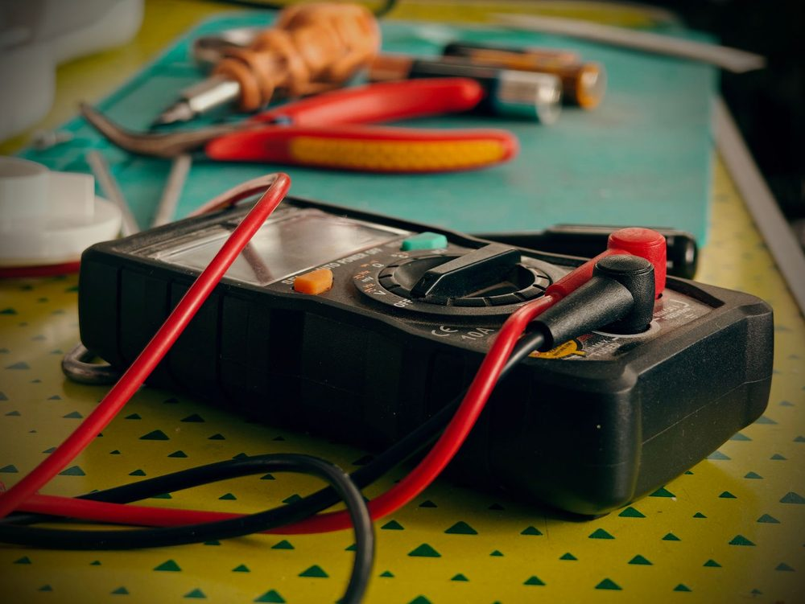
Day 1
Understanding Your Lighting System
Identifying voltage drops is crucial for even lighting.
Voltage measurements should be taken only by someone qualified to perform them safely. If you are not, stop at a visual dusk check or hire an electrician. Do not assume a fixed 12 to 14 volt AC reading. Nominal 12 V kits may use AC or DC supplies, tap settings, or electronic drivers with different output ranges. Set the meter to the quantity the manufacturer specifies, and compare the reading only with that kit's stated range at the points the manual names.
A far fixture that is much dimmer than a near fixture is a drop clue, not a number you can copy from this book. A common fix, when the kit allows it, is to split one long run into two shorter runs and then recheck connectors for corrosion. Confirm any electrical change against the maker's instructions.
If a qualified person records readings, keep them on the Run Card so later changes have a baseline. A voltage reading does not prove the installation is safe.
Day 2 · Flicker and residual-current trips
Day 2
Flicker and residual-current trips
Addressing flicker and residual-current protection issues requires systematic checks.
Symptom: lamps flicker. Possible cause: loose 12 V connector, undersized cable, solar battery, or a failing driver. Safe next action: unplug the transformer, dry and reseat kit connectors. If flicker remains on a new kit, stop.
Symptom: RCCB/RCBO (GFCI in US terms) trips and will not stay on. Possible cause: water in a joint, damaged mains flex, or a fault on the 230 V side. Safe next action: do not keep resetting. Unplug the transformer. Call an electrician. Repeated resets are not a repair.
Stop and hire a licensed electrician for mains-voltage work, a new outdoor socket, fixed wiring, uncertain earthing, or any connection you cannot identify. Low-voltage fixtures do not make the household supply safe to DIY.
Day 3 · Safety checks and when to stop
Day 3
Safety checks and when to stop
In this apartment
In her Mumbai flat, Meera is preparing to install new outdoor lights. She wants to ensure that her setup is safe and compliant with local regulations.
Safety checks are vital before and after installation.
If you will bury cable on a private plot, have utilities marked first. Burial depth follows the cable maker and local rules, not a universal spade depth. Renters should not cut common land.
Use the strain relief and drip loop the transformer manual shows. Keep the unit off soil and out of sprinkler spray. Weatherproof only with the kit's connectors.
After storms, unplug and look for cut cable, tilted fixtures, or water in joints before you restore power. If the residual-current device trips, stop and call an electrician.